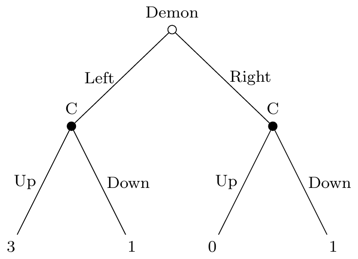
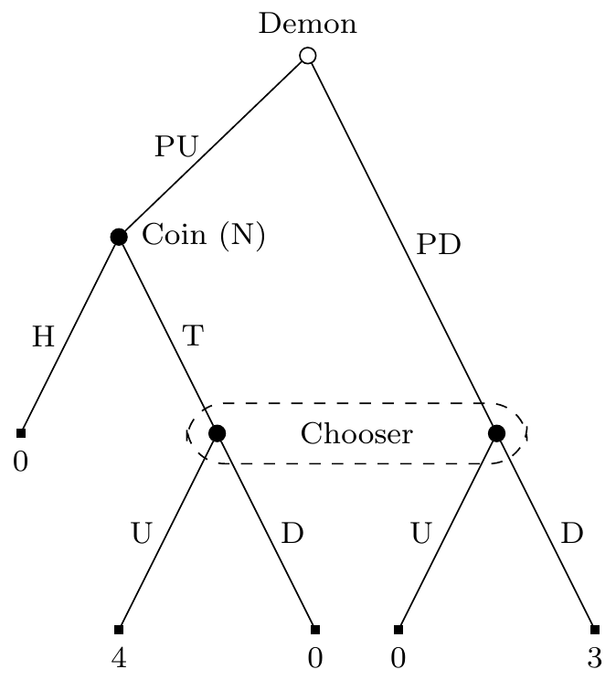
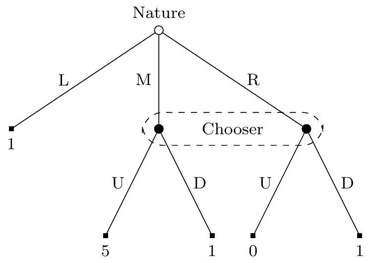

Contemporary decision theory has become disjointed. There is less overlap than there should be in work on adjacent problems. This paper aims to undo some of that, by showing that four problems that have largely been worked on in isolation cast useful light on each other. Some of the conclusions that draw will be familiar: on one of the problems I’m going to defend a similar answer to what Melissa Fusco (n.d.) has defended; on another I’m going to defend a similar answer to one defended by Harvey Lederman (2024). What’s primarily distinctive about the arguments here is that they show these questions are connected, and the arguments for my preferred answers are going to be intertwined.
This paper is part of a broader project of identifying the decision theory that is implicit in standard, textbook approaches to game theory, and arguing that this decision theory is better than the ones currently on the philosophical market. I used to think the first part of this project would be boring - game theorists are just typical Causal Decision Theorists. This can’t be true for five reasons. First, these textbooks don’t mention counterfactuals at all, but counterfactuals are central to typical presentations of Causal Decision Theory. Second, solution concepts in game theory are typically not single-valued, in the technical sense defined by Pearce (1984), while typical versions of Causal Decision Theory are single-valued. Third, sometimes the unique solution to a game involves mixed strategies, while Causal Decision Theory, in its typical formulations, never says that a mixed strategy is uniquely optimal. Fourth, the solution concepts used for things like the beer-quiche game (Cho and Kreps 1987) put constraints that go beyond coherence constraints on the players, and typical formulations of Causal Decision Theory allow any coherent credence function. Finally, the textbook solution concepts for dynamic games don’t correspond to any view in the philosophical literature on dynamic games.
Game theory textbooks tend to be several hundred pages, and identifying all the unique characteristics of the implicit decision theory, like the five from the previous paragraph, would take just as much space. So I’m going to simplify a lot here. In particular, I’m not going to talk about mixed strategies, except occasionally in footnotes. That is, I’m not going to assume anything about the availability or unavailability of mixed strategies in the arguments I put forward. That said, some of the positions I put forward are similar enough to existing positions that there are well known objections in the literature, and in many cases my preferred response to those objections does rely on the availability of mixed strategies. Getting all the details of those right would massively extend the paper, so I’ll stay away from those discussions here. Relatedly, while I will spend a lot of time on problems where there are multiple pure strategy equilibria, I won’t discuss any problems where there are no pure strategy equilibria. Those are for another day. With those qualifications in place, it’s time to get to the four problems I will discuss.
1 Four Problems
1.1 Demons
When a student starts decision theory, they are introduced to a view that is simple, elegant, and wrong. The view starts by assuming that a chooser, hereafter called Chooser, has a set of possible actions A available. We’ll use a to represent an arbitrary member of that set. And there is a set of possible states S, with s being used to pick out an arbitrary member. It is assumed that a probability distribution Pr over S is given, and that each action-state pair has a numerical value. I’ll write V for the value function, so V(as) is the value of performing act a in state s.
The simple, elegant, and wrong theory is that Chooser should value each act a by its expected value. That is, the value of act a is Σs ∈ S Pr(s)V(as). And Chooser should then choose the act with the highest value.
The problem with this view is that if Chooser has any influence over which state is actual, then this view will recommend obviously bad actions. Assume that the only possibly actions are a and b, the only two states are s and t, and while a will almost certainly cause s to be actual, b will almost certainly cause b to be actual. Now let the payoffs for all four action-state combinations be as in Table 1.
| s | t | |
|---|---|---|
| a | 1 | 1001 |
| b | 0 | 1000 |
The problem is that in Table 1 it obviously makes sense to do b, since that brings about the best option, but the simple theory says that the value of a is 1 more than the value of b. So Table 1 is a counterexample to the simple theory. So far every decision theorist would agree. But here agreement ends. There is no agreement on either why the simple theory fails in this case, or what should go in its place.
Evidential decision theorists such as Arif Ahmed (2014) say the problem is that there is an evidential connection between the acts and the states. They say that instead of the simple theory Chooser should value options using this formula.
- EDT
- V(a) = Σs ∈ S Pr(s | a)V(as)
As with the simple theory, the only rule is that Chooser should maximise value. The difference between EDT and the simple theory is that EDT replaces an unconditional probability with a conditional probability in the formula that gives the value of options. This will get the right result in Table 1, but gives some strange results in other cases.
Reinterpret Table 1 so that the states are causally independent of the actions, but which action Chooser chooses provides excellent evidence about which state they are in. To use the standard example, going back to Nozick (1969), imagine that a demon (hereafter called Demon) has predicted Chooser’s choice. There is no backwards causation, so Chooser’s choice is causally independent of Demon’s prediction. But Chooser believes Demon is incredibly reliable, so Pr(s | a) ≈ 1, and Pr(t | b) ≈ 1. For ease of reference, I’ll use Table 2 as the game table for this problem, where the states are the predictions of an accurate Demon. In Table 2, Chooser selects Up or Down, and Demon Predicts this choice. In general in what follows, if a state is labelled PX, it means that Demon has predicted that Chooser will select X. Using that notation Table 2 is just Newcomb’s Problem.
| PU | PD | |
|---|---|---|
| U | 1 | 1001 |
| D | 0 | 1000 |
In Table 2, EDT says that Chooser should do a. There is a simple argument that Chooser should do b: whatever the world is like, it will have a higher return. This argument convinced many people that we need a different theory, and over the 1970s and 1980s a lot of people settled on something like CfDT as the right alternative.1
1 The canonical statement of this view is Gibbard and Harper (1978).
- CfDT
- V(a) = Σs ∈ S Pr(a □→ s)V(as)
That’s a way to value options; the theory is just that one should choose the option with maximal value. Recently Brian Hedden (2023) has argued that this theory is preferable to Causal Decision Theory, properly so called. I’m sympathetic to the reply offered by Dmitri Gallow (n.d.-a) that CfDT just is what Causal Decision Theorists in the 1970s and 1980s were typically defending. But I also think, for reasons that will soon become clear, that some other theories which are quite different to this are also causal in the relevant sense. So from now on I’ll use “Causal Decision Theory” to name a family of theories, and CfDT will be a distinctive member of that family.
Another theory in that family says that the simple theory was essentially correct, it was just applied at the wrong time. This theory, which I’ll call Gamified Decision Theory, or GDT, starts with the following two claims. First, the relevant state probabilities are those at the end of deliberation, once a choice has been made, not at the start of deliberation. Second, when we use those ex post probabilities, the simple theory is fine. In symbols, the core formula that GDT uses is this.
- GDT
- V(a) = Σs ∈ S Pr′(s)V(as)
In this formula, Pr′ is the probability distribution over states after Chooser has made their decision. GDT says that only options that have maximal value using this formula are choice-worthy.2 This allows that different options, with different values, could be choice-worthy. All that matters is that given the probability distribution over states that Chooser has when they have decided to perform an act, that act is utility maximising. In Table 3, GDT says that both Up and Down are choice-worthy.
2 My preferred version of GDT adds several more constraints to this - it has a separate constraint for ruling out weakly dominated options, and a constraint for solving beer-quiche games, and maybe a constraint for ruling out mixed strategies in coordination games. But having maximal value ex post is a necessary condition for choice-worthiness.
| PU | PD | |
|---|---|---|
| U | 3 | 0 |
| D | 0 | 2 |
One of our four problems is to work out which of these theories is right. I’ll be arguing for GDT.
It’s sometimes said that problems involving Demon should not be treated as central to decision theory because Demon is so unrealistic. I think this view is mistaken twice over. For one thing, Demon isn’t that much more unrealistic than the precise probabilistic models of the future of humanity that routinely do get used. More importantly, the problems that come up in this section arise in some very ordinary models. As Lewis (1979) pointed out, Prisoners’ Dilemma with a twin raises much the same problems. Standard approaches to game theory presuppose that other players are like perfectly accurate demons.3 Most importantly, all the views about how to make decisions in Newcomb-like problems come apart as soon as we assume Demon is better than chance at predicting Chooser. And better than chance predictions can be reasonably believed. I suspect if I was allowed to interview and observe people before they chose, I could predict their choices at well over 60% accuracy, and probably over 70%. To simplify the math, I’ll work with a Demon who is perfectly accurate, or at least arbitrarily accurate.4 But with some extra attention to detail, we could rewrite every example in the paper with a realistic Demon. I think having very accurate Demons is a worthwhile tradeoff of clarity for realism, but if you disagree it’s not that hard to imagine the paper rewritten with demons only somewhat better than chance.
3 Matthias Risse (2000) criticises these standard approaches on this point, and while I’m sympathetic to his criticism, it’s worth taking seriously how wide-spread the assumption of perfect prediction is across the academy.
4 That is, I’ll assume Demon’s accuracy is 1‑ε, for arbitrarily small ε.
1.2 Risk
Think about what value of x would make Chooser indifferent between these two options, and why that would be the right value
- $1,000,000
- A gamble that returns $2,000,000 with probability x, and $0 with probability 1-x.
What factors are relevant to solving for x? One factor is the declining marginal utility of money. Money primarily has exchange value, and if Chooser won $2,000,000, the things Chooser would buy with the second million dollars are largely things they declined to buy with the first million. Hence the second million will be worth much less to them than the first, barring a pronounced taste for expensive goods that lack valuable parts. That’s one factor that goes into solving for x. Every decision theorist agrees it is important, and that it is part of why whatever value x takes, it is surely well above ½.
But is it the only factor? If Chooser is rational, is knowing the function from the money they have to the utility they get from money enough to solve for x? The orthodox answer is that it is. Lara Buchak (2013) has argued that it is not. We also need to know how much Chooser values, or more likely disvalues, risk. That is, we need to know how risk-seeking, or risk-averse, Chooser is.
The orthodox view is that all we need to know are three numbers:
- The value Chooser assigns to their current wealth, which we can set as 0 for ease of calculation.
- The value Chooser assigns to having $1,000,000 more than their current wealth, which we can set as 1 again for ease of calculation.
- The value Chooser assigns to having $2,000,000 more than their current wealth, which we will label c.
Then on the standard view, the value of the gamble is cx, so the gamble is equal to the sure million iff x = 1/c. On Buchak’s view, rational Chooser has a risk function f, that measures their sensitivity to risk. The function must be monotonic increasing, with f(0) = 0, and f(1) = 1. If Chooser is risk-averse, then typically f(x) < x.
Buchak’s view reduces to the orthodox view if f(x) = x. I’m going to argue that given one very natural constraint, we can show that f(x) must indeed equal x. I’m far from the first to make an argument on these lines; I think the arguments that Briggs (2015) and Thoma (2019) make for the same conclusion are also successful. What’s novel about what I’m going here is two-fold. First, the premise I’ll use is, I think, weaker and more plausible than the premises used in other arguments. Second, and more importantly, I’ll be using the same premise to resolve problems involving demons as to argue against Buchak’s view. A big aim of this paper is to bring different parts of contemporary decision theory together. As a quick glance at the literature will tell you, there isn’t much overlap between work on views like Buchak’s and work on problems involving demons, though both of them are large literatures. This is a mistake, and one I’m hoping to help rectify here.
1.3 Non-Linearity
Standard approaches to decision theory assign to Chooser a probability function and a utility function, both defined over (some) propositions. The domain of each function is some subset of the reals; the interval [0,1] for the probability, and some bounded interval for the utilities. The real numbers have a distinctive topology. Among other things, they are totally ordered: for any two numbers, either one is greater, or they are equal. So assuming that probabilities and utilities are numerical involves assuming, among other things, that they are also totally ordered. That is, for any two propositions, the probability(/utility) of the first is either greater than, less than, or equal to, that of the other. Call this assumption Ordering.
Ordering is controversial, both for probabilities and utilities. For probabilities, it has been criticised since Keynes’s Treatise on Probability (1921), and in recent times has been criticised by, among others, Peter Walley (1991) and James Joyce (2010). For utilities, the most prominent critic has been Ruth Chang (2002, 2015).
It takes a little work to create a counterexample to Ordering. It’s no good to just put forward two things and say it isn’t clear which is larger. For one thing, it might simply be unknown which is larger. For another, they might be equal. We’ll come back to the first concern in a bit. Ruth Chang (2002) points out a natural way to avoid the second complaint. Consider three options A, B, and A+, with the following features.
- A and B concern different subject matters.
- It is unclear whether the value of A or of B is larger. (The ‘value’ here could be either probability or utility.)
- A+ is by design fractionally larger than A. If the value is utility, A+ could be A plus a cookie. If it is probability, A+ could be the disjunction A or this lottery ticket wins.
- If A and B were equal in value, then since A+ is greater than A, A+ would be greater than B.
- But it is also unclear whether A+ is greater than B.
Call this the sweetening argument, since A+ is generated from A by making it a bit better, sweetening it.
Just like there are many critics of Ordering, there are many defenders. Dorr, Nebel, and Zuehl (2023) defend it on semantic grounds. Adam Elga (2010) argues that violations of Ordering for probabilities leads to susceptibility to a money pump. Johan Gustafsson (2022) makes a similar in favour of Ordering for utilities.
Even critics of Ordering have noted its unintuitive characteristics. Bradley and Steele (2016) argue that violations of Ordering for probabilities leads to thinking it is acceptable to pay to avoid information.5 Harvey Lederman (2024) argues that violations of Ordering for utilities leads to violations of a principle he calls Negative Dominance.
5 It’s uncontroversial that in some cases we pay to avoid information, e.g., we take efforts to avoid spoilers for movies. Even if the information doesn’t change the value of the final product, we might pay to avoid it if the information is not partitional (Das 2023), or we don’t know we’ll conditionalise (Neth, n.d.). But if none of these three conditions are met, and probabilities and utilities satisfy Ordering, we should never pay to avoid information (Blackwell 1951).
Negative Dominance
It’s rationally required that: if [one] strictly prefers one game of chance to another, one prefers one of the prizes that the first might yield, to one of the prizes that the second might yield.
Both Bradley and Steele, and Lederman, think that ultimately Ordering should be rejected, and we should live with these unintuitive results. They are both pointing out troubling features of their own view. (Something philosophers should do more often.)
In each case it isn’t hard to convert the argument they give to a problem for the other kind of Ordering violation. If Ordering fails for utilities, a Bradley and Steele-style argument shows that it is worth paying to avoid information, and if it fails for probabilities, a Lederman style argument shows that Negative Dominance fails.
I’m going to offer a new defence of Ordering violations. The defence has two parts. First, I’ll argue that even if Ordering holds for probabilities and for values of states, it does not hold for values of actions. A bit loosely, even if Ordering is true for preferences over ends, it isn’t true for preferences over means. This shows we have independent reason to reject any principle that entails Ordering is true in general. That includes Negative Dominance6, and the semantic principles Dorr et al endorse. Second, I’m going to argue that many of the criticisms of views that permit Ordering violations presuppose a false view about how rational dynamic choice works. This is how I’ll respond to Elga, Gustafsson, and Bradley and Steele.
6 Negative Dominance doesn’t on its own entail Ordering, but it does in conjunction with some other principles that I accept, and indeed will be indirectly defending in this paper.
1.4 Dynamic Choice
On that note, it’s time to introduce the last of our four problems - what the general theory of rational dynamic choice should look like. First, I’ll set up how I’m conceiving of dynamic choice situations.
For the purposes of this paper, a decision tree is a sextuple ⟨W, R, V, a, I, Pr⟩ such that:
- W is a finite set of nodes. One of these nodes, call it o for origin, is designated as the initial node.
- R is a relation on W such that for any x ∈ W, ¬xRo, and if y ≠ o, there is a unique x such that xRy. Intuitively, the decision problem starts at o, and continues by moving from a node x to another node y such that xRy until there is nowhere further to go. Say that x is a predecessor of y if xR+y, where R+ is the ancestral of R.
- V is a value function. It maps each terminal node of W to a real number. A node x is a terminal node iff there is no y such that xRy.
- a is a function from non-terminal nodes in W to the set {C, D, N} that says who the agent is for each node. Intuitively, C is for Chooser, D is for Demon, and N is for Nature. That agent ‘chooses’ where the game goes next.
- I is a partition of the nodes the non-terminal nodes x: a(x) =C. The elements of this partition are called information sets. Intuitively, when Chooser reaches a node where they must choose, they know that they are in one member of this partition, i.e., one information set, and nothing more. Any two nodes in the same information set have the same number of outbound links.
- Pr is a conditional probability function. It says that given a strategy for Chooser, and that a particular non-terminal node x which is assigned to Demon or Nature has reached, what the probability is that we’ll move to some further node y such that xRy. If x is assigned to Nature, this probability is independent of Chooser’s strategy.
A strategy for one of the three players, Demon, Chooser or Nature, is a function from all the nodes in the tree which are assigned to them, to the move they will make if that node is reached.7 Given any decision tree, one can generate a strategic decision problem where the possible actions are strategies for Chooser, and the states are pairs of strategies for Demon and strategies for Nature. One question that will be central
7 It doesn’t matter much for our purposes, but note that in general a strategy includes what to do if one reaches a node that is ruled out by one’s own prior choices.
There are two standard positions in philosophy for how to navigate decision trees. The resolute view says that Chooser should use the correct static theory of choice to pick a strategy at the start, and then resolutely stick with it. The sophisticated theory says that Chooser should take each node as a new choice, treat their past choices as fixed, and treat their future choices as another more-or-less knowable part of the world, and do whatever is best given those constraints. My view is that both of these are wrong.
The dual mandate approach, which I favour, says that Chooser should adopt a strategy that makes sense and stick to it, just like the resolute theory says, and Chooser should make choices that make sense at each point, just like the sophisticated theory says. It disagrees with the two existing theories on two counts. First, it denies that either provides a sufficient theory for a sequence of choices being rational. Second, it says that if Chooser adopts a plan that makes sense now, and will continue to make sense at each node conditional on reaching that node, Chooser does not have to regard the future as unknowable. Rather, Chooser can know that they will keep following the sensible plan they have adopted. The point is not just that Chooser knows they will continue to be rational. If Chooser has many rational choices, once they adopt one, Chooser can know they’ll stick to it.
This leads to the first reason for adopting the Dual Mandate view: it respects the distinctive relationship that holds between time-slices of the same person. On the resolute view, later stages of Chooser regard earlier stages as their Lord and Master, dictating what to do even if it no longer makes sense. On the sophisticated view, later stages of Chooser regard earlier stages as just someone that they used to know. As Stalnaker (1999) points out, neither of these feels right; we want something between those two pictures. Now this doesn’t entail that the Dual Mandate view is right, since there are a lot of theories that are intuitively between the two pictures. But it should suggest that we look for something like the Dual Mandate view.
The second argument for it is that widely adopted in other disciplines. In most textbook presentations of game theory, the first solution concept for dynamic games that gets introduced is subgame perfect equilibrium. This idea traces back to Selten (1965). It says that in an equilibrium, all players will adopt strategies that are in equilibrium over the whole game, and which are in equilibrium when restricted to ‘subgames’.8 The Dual Mandate View is my attempt to translate this idea into decision theoretic language. But what I want to stress here is that the idea that choices should be rational both at a time, and over time, is completely uncontroversial in game theory; it’s just presented in the textbooks as the way to solve dynamic games.
8 A subgame of the original game is the set of all nodes reachable from a particular node that is in a single information set, with all the other properties and relations of those nodes held fixed.
The third argument is that decision theorists appeal to something like the Dual Mandate View already. Jack Spencer (2023) argues that (some versions of) Causal Decision Theory are “dynamically inconsistent”. By that he means that there are some decision trees where the target version of CDT, plus the sophisticated approach to rational choice, ends up selecting a choice that is strictly worse than an available choice. Spencer’s example relies on the unavailability of mixed strategies, and I don’t think his targets should accept that assumption. So I don’t think his overall argument works. But I do think the reasoning he uses is correct. If a sequence of choices leaves one necessarily worse off than some other available sequence of choices, that shows the first sequence was bad. But why does this show the first sequence is bad, rather than just, say, unlucky? The Dual Mandate View has an answer to this question; sequences of choices must be part of rationally playable strategies, and dominated strategies are not rationally playable.
2 The Single Choice Principle
2.1 Equivalence Principles
In Section 1.4, I set out two ways of describing certain problems: as decision trees and as strategy tables. You might wonder whether this is just notational variation. Do the tree and its associated table represent the same problem? Or, at least, do they represent problems that have the same answers for deep reasons.
At first glance, the answer to this question is obviously no. The problems have different kinds of answers. Consider the following game, which I’ll call Non-Credible Threat.9
9 The example is based on the example Wikipedia uses to illustrate the game-theoretic concept of a non-credible threat Non-credible Threat (2024).
- First, Demon chooses Left or Right.
- Then, after Demon’s choice is revealed, Chooser selects Up or Down.
- If Chooser selects Down, they get 1. If Chooser selects Up, they get 3 if Demon chose Left, and 0 if Demon chose Right.
- Demon’s choice was driven by their (very accurate) prediction of Chooser’s strategy. If they predicted Chooser would adopt the strategy (Up-if-Left, Up-if-Right), they chose Left; otherwise they chose Right.
Figure 1 is the tree for Non-Credible Threat, and Table 4 is the strategy table for it. (In the table, and from now on when discussing this game, I’ll use XY to mean the strategy (X-if-Left, Y-if-Right). So UU is the strategy of going Up whatever Demon does.) The way to read figures like Figure 1 is to start at the open circle. In this case, it’s in the middle of the figure. That’s the origin of the game. Lines between nodes show what can be reached from one node. These are directional, but I won’t include arrows because the position of the origin determines the direction. The circle nodes are points where a choice is to be made, and each such node is labelled with who makes the choice. The square nodes are terminal nodes, and they are labelled with values showing Chooser’s payout if that node is reached.
| PUU | ¬PUU | |
|---|---|---|
| UU | 3 | 0 |
| UD | 3 | 1 |
| DU | 1 | 0 |
| DD | 1 | 1 |
Call a run through the game a sequence of moves from the origin to a terminal node. A run through the game is rational iff every move Chooser makes is rational. Now we can phrase the questions from the opening paragraph of this section a bit more precisely. What is the relationship between rational runs through trees like Figure 1, and rational strategies in tables like Table 4? And we can see an immediate complication. In any run through the tree, Chooser makes one binary selection; but to select a strategy is to make two binary selections.
There is a simple way around this problem. (What I’m about to describe is too simplistic for many purposes, but it will do for ours.) Say that a tree and its associated table are dynamically-strategically equivalent, for short ds-equivalent, iff the following two conditions are met.
- For any rational run through the tree, there is a rational strategy in the table that agrees with the run on what to do at nodes where Chooser actually made choices during the run.
- For any rational strategy in the table, any run that follows this strategy is rational.
Then say a class of tree-table pairs is ds-equivalent iff every member of the class is. With those definitions on board, we can ask a bunch of questions.
- Is the class of all tree-table pairs ds-equivalent?
- Is the class of all tree-table pairs that don’t involve demons ds-equivalent?
- Is the class of all tree-table pairs where Chooser moves at most once in each run ds-equivalent?
And this list is obviously not exhaustive.
A positive answer to the first question would render all the other questions redundant. And a positive answer there is not completely implausible. But most decision theorists would answer it negatively. Many would say that Figure 1/Table 4 is already a counterexample. In Figure 1 the only rational strategy is UD. By the time Chooser moves, there is no uncertainty; Chooser just selects the larger or the smaller value, and larger is better. On the other hand, many theories say that UU is a rational strategy in Table 4. Evidential Decision Theory says this, but so do some Causal Decision Theories. Whether this is plausible or not turns on tricky questions about the normative significance of Weak Dominance reasoning, and on whether we should thin of Demon as perfectly accurate or just arbitrarily accurate. For what it’s worth, I think the only rational move in Table 4 is UD, so I think this pair is ds-equivalent. But I do not think that’s obvious, and I certainly don’t think it could be a premise in an argument for or against any decision theory.
There is a much more restricted ds-equivalence claim that can properly serve as a premise in reasoning about decision theory, and it’s time to introduce it.
2.2 Introducing the Single Choice Principle
In Figure 1/Table 4, Chooser has two binary choices to make. They will make at most one on them in any run through the game. But a strategy for Chooser has to settle both questions.
For the rest of this paper, I’m going to primarily focus on decision trees where there is only one possible decision for Chooser to make. Chooser might not get to make it; the game might end without Chooser making a move. But Chooser knows at the start of the game that if they do have to move, exactly what the situation will be in when they move. There is nothing they can learn between the start of the game and when they move, other than the fact that they do in fact have to move. That’s to say, all the nodes where they move are epistemically indistinguishable; they are all in the same information set.
The point of this section is to argue that in any such game, dynamic-strategic equivalence holds. I’m going to defend what I’ll call the Single Choice Principle.
Single Choice Principle (SCP)
In any decision tree in which all the nodes where Chooser acts are in a single information set, an option is choice-worthy in the dynamic form of the game iff it is choice-worthy in the strategic form of the game.
There are two arguments for the SCP, one semantic and one intuitive. I’ll start with the semantic.
Imagine the game-master asking Chooser for a strategy in the strategic form of the game. Normally, to ask someone for a strategy, one asks them a series of conditional questions: If we get to here, what will you do?, And if we get to this other point, what will you do?, and so on. Here there is just one question to ask: If we get to the information set where you have to choose, what will you do?
Now imagine the game-master asking Chooser for a move in the dynamic form of the game. By the rules of the game, they have to fill in Chooser on which information set we’ve reached. So they’ll tell Chooser: We’ve got to the information set where you have to choose. And then they’ll ask What do you do?
At a deep level, the game-master is asking the same question on each occasion. How does one figure out what to do if one reaches a situation? As Ramsey ([1929] 1990) says, one adds the assumption that one reached that situation “hypothetically to [one’s] stock of knowledge” (155n) and reasons on that basis about what to do. Apart from the fact that it’s hypothetical, that’s exactly the same thing one does when one learns that one is in a particular situation. One adds the fact that one is in a situation to one’s actual stock of knowledge, and reasons on that basis about what to do. It’s true that here we are thinking about practical reasoning not theoretical reasoning, but the thought that these are just the same processes, and just the same outcomes to them are rationally permissible, is just as plausible here as in Ramsey’s original case.
In general, the same answers are rationally permissible to the following two questions:
- If p, what will you do?
- p, now what will you do?
And the SCP is just a special case of the equivalence of these questions. Here p is that Chooser has reached the one-and-only information set in the tree where they must choose.
The intuitive argument comes from thinking about how strange violations of the SCP sound in practice. Here it’s helpful to have an example. Our first example game, which I’ll call Four-Three-Closed, has three stages. At stage one, Demon predicts whether Chooser will play Up or Down at stage three (if it is reached). Demon’s predictions are (and are believed by Chooser to be) arbitrarily accurate no matter what Chooser does. At stage two, if Demon predicts Up, a fair coin is flipped. If it lands Heads, the game ends, and Chooser gets 0. If lands Tails, or Demon predicts Down, we proceed to stage 3. At that point, Chooser selects Up or Down, and their payouts are as follows:
- If Demon predicted incorrectly, they get 0.
- If Demon correctly predicted that they would choose Up, they get 4.
- If Demon correctly predicted that they would choose Down, they get 3.
Figure 2 shows the tree for the game, and Table 5 shows the payouts for each possible move by Demon, Chooser, and Nature (i.e., the coin).

| Up-Heads | Up-Tails | Down-Heads | Down-Tails | |
|---|---|---|---|---|
| Up | 0 | 4 | 0 | 0 |
| Down | 0 | 0 | 3 | 3 |
There is one extra bit of notation in Figure 2; the dashed lines around the two nodes where Chooser acts. These lines mean that when Chooser gets to one of those nodes, all the know is that they are somewhere in the set; they do not know which node they are at. If they do get there, they’ll know that they are not at the left-most branch of the tree, so they are facing the table shown by Table 6.
| Up-Tails | Down-Heads | Down-Tails | |
|---|---|---|---|
| Up | 4 | 0 | 0 |
| Down | 0 | 3 | 3 |
Conditional on playing Up, they’ll have got some weak evidence against Demon’s reliability, but that won’t make a major difference if they started out thinking that Demon was arbitrarily accurate. So whether Chooser reaches Table 6 as part of Figure 2, or it was the first interaction they have with Demon shouldn’t make a difference to how they act.
Despite that, imagine Chooser does violate SCP. In particular, imagine they are disposed to play Up in Table 6, and Down in Table 5. To make vivid how odd this is, we’ll also imagine that Chooser is talking to the Game-Master while they wait for Demon’s prediction.
Chooser: Do they normally take this long?
Game-Master: Sometimes. Predictions are hard.
C: Well, as long as they get it right.
GM: What are you thinking of playing? You know, if you have to play?
C: I think Up. Four beats three, and Demon is almost always right.
GM: Makes sense.
C: Hey look, I’ve got a meeting in a few minutes, is there anything we can do to hurry them along?
GM: Nah, but if you like just tell me what you’ll play, and if it gets that far I’ll put in the move for you.
C: Thanks, that’s great. I’m playing Down.
GM: Why did you change your mind?
C: What do you mean? I didn’t change my mind.
GM: You just said Up, now you’re playing Down.
C: That was a different question. Earlier I thought I’d have to play after it was revealed that I had a move to make. Now I’m just putting in a move that will be played if I have a move to make. Totally different.
GM: So if you stayed, you would play Up?
C: For sure. But I want you to play Down.
This sounds incoherent to me. It’s not that I think either move is wrong. In fact I’m going to argue that both Up and Down are permissible moves. It’s that I think Chooser is answering the same question, what will you, a rational player, do if you have to choose, in two different ways depending on how it is asked. Coherence requires that Chooser answer that question the same way every time, and this incoherence is a sign that something’s deeply wrong with Chooser.
This argument for the SCP is similar to the depragmatised version of the Dutch Book argument that David Christensen (1996) offers. The point, he says, of Dutch Book arguments is not that the victim loses money. There are ways to avoid the loss by strategic betting, and even if there weren’t, this would show a practical failing not a theoretical flaw. What Dutch Book arguments do show, at least if they are successful, is that the victim is incoherent in a particular way. They value the same thing differently under two different descriptions. And they are even in a position to see, if they think about it, that these descriptions pick out the same thing.
That’s what goes on in this dialogue. Chooser is asked the same question, what will you do if it is your move, twice. When they are asked it in the context of imagining themselves actually choosing, they say Up. When they are asked in the context of giving Game-Master a move in advance, they say Down. But it’s the same question each time.
There are two other arguments for the SCP that I don’t want to lean quite as heavily on.
One is that the SCP is just an instance of the Sure-Thing Principle, and the Sure-Thing Principle is true. There are two problems with this argument. One is that I want to deploy the SCP against theories that go out of their way to reject Sure-Thing. If the only argument for the SCP was from Sure-Thing, these uses would be blatantly question-begging. The other is that it’s not clear that my preferred theory, Gamified Decision Theory (GDT), actually endorses Sure-Thing in full generality. The arguments that Dmitri Gallow (n.d.-b) gives for the inconsistency of Causal Decision Theory and Sure-Thing might generalise to GDT as well.
Another argument is that SCP follows from the more general principle of dynamic-strategic equivalence. But arguing for the SCP this way would require arguing that only UpUp is rational in Table 4. And while that might be right, I don’t want to rest the whole paper on it.
It’s better to argue from the Ramsey test, and from the intuition that Chooser is being incoherent in the above dialogue, and those are the two arguments I’ll rely on in what follows.
3 Applications
3.1 Evidential Decision Theory
Evidential Decision Theory (EDT) is inconsistent with the Single Choice Principle. Figure 2 can be used to show this, but it’s a little clearer to work with a variant example. Change the case so that if Chooser has a choice, they get 4 if they choose Up, and 3 if they choose Down, whatever Demon predicted. So the game tree looks like Figure 3.
Before Chooser knows whether they must make a choice, the strategy table looks like Table 8 (a); at the time they have to choose it looks like Table 8 (b). Note that the values in Table 8 (a) are expected values, since EDT says that once we conditionalise on what Demon does, all that matters is expected value.
| PUp | PDown | |
|---|---|---|
| Up | 2 | 4 |
| Down | 1.5 | 3 |
| PUp | PDown | |
|---|---|---|
| Up | 4 | 4 |
| Down | 3 | 3 |
EDT, like most other theories, says to choose Up in Table 8 (b). But Table 8 (a) is a Newcomb problem, and EDT says to choose Down. That pair of views is, according to SCP, incoherent. EDT recommends rational Chooser give different answers to the following two questions.
- Assuming you have to choose, what do you do?
- What will you do if you have to choose?
Whatever answer one gives to either question, rational Chooser gives to the other question as well.
The point here is not that EDT recommends a dominated option in Table 8 (a). This argument doesn’t work against other views that recommend dominated options like Levinstein and Soares’s Functional Decision Theory (Levinstein and Soares 2020). After all, they answer these two questions the same way. And the objection is that EDT offers different answers to questions that should get the same answer.
Nor is it just that EDT recommends paying to avoid information. At the start of the game, EDT thinks that Down is worth 1 more than Up, and they’ll choose Up if they get the information that they must choose, and they will almost certainly choose. So given a choice between paying nearly 1 to choose now, and choosing after they learn what whether they have to choose, they will pay to avoid learning the information. That’s a familiar worry for EDT, and Ahmed and Price (2012) have a response to it.
Rather, the worry is that the particular information Chooser gets in this case, namely that they have to choose, should not make a difference to how they choose. When one is thinking of making a choice that will only be effective if p, one should assume p, and choose as if that assumption was in place. And that’s exactly what EDT does not do in Figure 3.
3.2 Buchak on Risk
Most decision theorists think treat the question of how to make decisions when probabilities and utilities are precise, states are known to be causally independent of actions, and there are no demons around, as a solved problem. In those cases the simple and elegant theory from Section 1.1 is widely thought to be correct. One should simply maximise expected utility.
The most important alternative to the standard view is the risk-sensitive view developed by Lara Buchak (2013).10 The core of Buchak’s theory is a non-standard way of valuing a gamble. For simplicity, we’ll focus on gambles with finitely many outcomes. Associate a gamble with a random variable O, which takes values o1, …, on, where oj > oi iff j > i. Buchak says that the risk-weighted expected utility of O is given by this formula, where r is the agent’s risk-weighting function.
10 Buchak’s view builds on earlier work by John Quiggin (1982) which was designed to model how people actually make choices in some famous choice situations.
\[ REU(O) = o_1 + \sum_{i = 2}^n r(\Pr(O \geq o_i))(o_i - o_{i-1}) \]
The decision rule then is simple: choose the gamble with the highest REU.
The key notion here is the function r, which measures Chooser’s attitudes to risk. If r is the identity function, then this definition becomes a slightly non-standard way of defining expected utility. Buchak allows it to be much more general. The key constraints are that \(r\) is monotonically increasing, that r(0) = 0 and r(1) = 1. In general, if r(x) < x, Chooser is some intuitive sense more risk-averse than an expected utility maximiser, while if r(x) > x, Chooser is more risk-seeking. The former case is more relevant to everyday intuitions, and it’s what I’ll focus on. Indeed, I’ll focus on the case where r(x) = x2, which is also a case Buchak uses a lot.
There are a number of good reasons to like Buchak’s theory. Standard expected utility theory explains risk-aversion in a surprisingly roundabout way. Risk-aversion simply falls out as a consequence of the fact that at almost all points, almost all goods have a declining marginal utiility. This is theoretically elegant - risk-aversion and relative satiation are explained in a single framework - but has a number of downsides. For one thing, it doesn’t allow rational agents to have certain kinds of risk-aversion, such as the kind described by Allais (1953). For another, it doesn’t seem like risk-aversion just is the same thing as the declining marginal utility of goods. Buchak’s theory, by putting attitudes to risk into r, avoids both these problems.
Unfortunately, Buchak’s theory is inconsistent with the Single Choice Principle. I’ll show this for the case r(x) = x2, but it’s not much harder to produce similar examples for any value of r other than r(x) = x. In Figure 4 at stage 1 a fair die will be rolled. If it lands 1 or 2, Nature moves Left; if it lands 3 or 4, Nature moves Middle; otherwise, Nature moves Right. If Nature moves Left, the game ends, and Chooser gets 1. Otherwise Chooser is told that Nature did not move Left, but not whether they moved Middle or Right. If Chooser selects Down, they get 1. If Chooser selects Up, they get 5 if Nature moved Middle, and 0 otherwise.

Table 8 (a) shows the strategic table of Figure 4, and Table 8 (b) shows the decision table Chooser faces at the time they have to choose.
| Left | Middle | Right | |
|---|---|---|---|
| Up | 1 | 5 | 0 |
| Down | 1 | 1 | 1 |
| Middle | Right | |
|---|---|---|
| Up | 5 | 0 |
| Down | 1 | 1 |
In Table 8 (a), the REU of Down is 1 (since that’s the only possible outcome), and the REU of Up is 8/9. There is a 2/3 chance of getting at least 1, so that’s worth 4/9, and there’s a 1/3 chance of getting another 4, so that’s also worth 4/9, and adding those gives 8/9. So the optimal strategy, according to REU theory, is Down. That is, REU says to prefer the strategy Choose Down if you have to choose to the strategy Choose Up if you have to choose.
But if we get to the choice point, we’re at Table 8 (b). And in that table the REU of Up is 5 times 1/4, i.e., 5/4. So at that point, REU says to choose Up. What REU says to do if you have to choose is different to which strategy it chooses for the one and only point you have to choose at. This is incoherent, so the theory is false.
The point is not that this is a completely novel argument; on it’s own it’s not that much more persuasive than earlier objections to Buchak’s view. What I want to stress here is the connection to puzzles about demons. The same principle that provided an objection to EDT also provides an objection to Buchak’s REU theory. This raises a particularly tricky problem for EDT. What could possibly motivate the combination of EDT with orthodox expected utility theory?
If our aim as decision theorists is to maximise agreement between theory and intuitions about cases, we perhaps should endorse EDT over CDT, but we should also endorse Buchak’s theory over orthodox expected utility theory. If our aim instead is to have a theory that is consistent with intuitions about decision theoretic principles, there are lots of reasons to reject Buchak’s theory. It violates the Sure Thing Principle, and its weaker cousin, the Single Choice Principle. It violates the principle that one shouldn’t pass up free information (Campbell-Moore and Salow 2020). It violates various sensible principles of dynamic choice (Briggs 2015; Thoma 2019). But EDT violates all these principles too. It’s really hard to see the starting point, the initial set of premises, that leads to the conclusion that orthodox expected utility, plus EDT, is the right combination of views.
This isn’t just a problem for EDT. Every theory that starts with expected value maximisation, then adds some complications to deal with demons, owes an answer to the following question. Why is this theory better than its counterpart that starts with Buchak’s theory, and adds the same demonic complications? It can’t be that it does better at capturing intuitions about cases, since the Buchakian theory wins on that score. It has to be that it satisfies more important principles. But the thing about principles is that they have to be, well, principled. They can’t be things that get dropped as soon as the going gets tough or a demon turns up. If the reason to reject the Buchakian counterpart to one’s theory is that the alternative theory says free evidence should be shunned, or the Sure Thing Principle abandoned, one must consistently say that free evidence should be valued, or the Sure Thing Principle preserved. This turns out to be a very hard standard to meet.
One big benefit of Gamified Decision Theory is that it has an answer to this compulsory question. GDT preserves the Single Choice Principle, and its Buchakian counterpart does not.
3.3 Linearity

References
Ahmed, Arif. 2014. Evidence, Decision and Causality. Cambridge: Cambridge University Press.
Ahmed, Arif, and Huw Price. 2012. “Arntzenius on ‘Why Ain’cha Rich?’.” Erkenntnis 77 (1): 15–30. doi: 10.1007/s10670-011-9355-2.
Allais, M. 1953. “Le Comportement de l’homme Rationnel Devant Le Risque: Critique Des Postulats Et Axiomes de l’ecole Americaine.” Econometrica 21 (4): 503–46. doi: 10.2307/1907921.
Blackwell, David. 1951. “Comparison of Experiments.” Proceedings of the Berkeley Symposium on Mathematical Statistics and Probability 2 (1): 93–102.
Bradley, Seamus, and Katie Steele. 2016. “Can Free Evidence Be Bad? Value of Informationfor the Imprecise Probabilist.” Philosophy of Science 83 (1): 1–28. doi: 10.1086/684184.
Briggs, Ray. 2015. “Costs of Abandoning the Sure-Thing Principle.” Canadian Journal of Philosophy 45 (5): 827–40. doi: 10.1080/00455091.2015.1122387.
Buchak, Lara. 2013. Risk and Rationality. Oxford: Oxford University Press.
Campbell-Moore, Catrin, and Bernhard Salow. 2020. “Avoiding Risk and Avoiding Evidence.” Australasian Journal of Philosophy 98 (3): 495–515. doi: 10.1080/00048402.2019.1697305.
Chang, Ruth. 2002. “The Possibility of Parity.” Ethics 112 (4): 659–88. doi: 10.1086/339673.
———. 2015. “Value Incomparability and Incommensurability.” In The Oxford Handbook of Value Theory, edited by Iwao Hirose and Jonas Olson, 205–24. Oxford: Oxford University Press. doi: 10.1093/oxfordhb/9780199959303.013.0012.
Cho, In-Koo, and David M. Kreps. 1987. “Signalling Games and Stable Equilibria.” The Quarterly Journal of Economics 102 (2): 179–221. doi: 10.2307/1885060.
Christensen, David. 1996. “Dutch-Book Arguments De-Pragmatized: Epistemic Consistency for Partial Believers.” Journal of Philosophy 93 (9): 450–79. doi: 10.2307/2940893.
Das, Nilanjan. 2023. “The Value of Biased Information.” British Journal for the Philosophy of Science 74 (1): 25–55. doi: 10.1093/bjps/axaa003.
Dorr, Cian, Jacob M. Nebel, and Jake Zuehl. 2023. “The Case for Comparability.” Noûs 57 (2): 414–53. doi: 10.1111/nous.12407.
Elga, Adam. 2010. “Subjective Probabilities Should Be Sharp.” Philosophers’ Imprint 10: 1–11.
Fusco, Melissa. n.d. “Absolution of a Causal Decision Theorist.” Noûs. doi: 10.1111/nous.12459. Early view.
Gallow, J. Dmitri. n.d.-a. “Counterfactual Decision Theory Is Causal Decision Theory.” Pacific Philosophical Quarterly. doi: 10.1111/papq.12451.
———. n.d.-b. “The Sure Thing Principle Leads to Instability.” Philosophical Quarterly. https://philpapers.org/archive/GALTST-2.pdf.
Gibbard, Allan, and William Harper. 1978. “Counterfactuals and Two Kinds of Expected Utility.” In Foundations and Applications of Decision Theory, edited by C. A. Hooker, J. J. Leach, and E. F. McClennen, 125–62. Dordrecht: Reidel.
Gustafsson, Johan E. 2022. Money-Pump Arguments. Cambridge: Cambridge University Press.
Hedden, Brian. 2023. “Counterfactual Decision Theory.” Mind2 132 (527): 730–61. doi: 10.1093/mind/fzac060.
Joyce, James M. 2010. “A Defence of Imprecise Credences in Inference and Decision Making.” Philosophical Perspectives 24 (1): 281–323. doi: 10.1111/j.1520-8583.2010.00194.x.
Keynes, John Maynard. 1921. Treatise on Probability. London: Macmillan.
Lederman, Harvey. 2024. “Of Marbles and Matchsticks.” Oxford Studies in Epistemology.
Levinstein, Benjamin Anders, and Nate Soares. 2020. “Cheating Death in Damascus.” Journal of Philosophy 117 (5): 237–66. doi: 10.5840/jphil2020117516.
Lewis, David. 1979. “Prisoners’ Dilemma Is a Newcomb Problem.” Philosophy and Public Affairs 8 (3): 235–40.
Neth, Sven. n.d. “Rational Aversion to Information.” British Journal for the Philosophy of Science. doi: 10.1086/727772. Early view.
Non-credible Threat. 2024. “Non-Credible Threat — Wikipedia, the Free Encyclopedia.” https://en.wikipedia.org/w/index.php?title=Non-credible_threat&oldid=1180356705. [Online; accessed 7-March-2024].
Nozick, Robert. 1969. “Newcomb’s Problem and Two Principles of Choice.” In Essays in Honor of Carl G. Hempel: A Tribute on the Occasion of His Sixty-Fifth Birthday. Hempel: A Tribute on the Occasion of His Sixty-Fifth Birthday, edited by Nicholas Rescher, 114–46. Riedel: Springer.
Pearce, David G. 1984. “Rationalizable Strategic Behavior and the Problem of Perfection.” Econometrica 52 (4): 1029–50. doi: 10.2307/1911197.
Quiggin, John. 1982. “A Theory of Anticipated Utility.” Journal of Economic Behavior & Organization 3 (4): 323–43. doi: 10.1016/0167-2681(82)90008-7.
Ramsey, Frank. (1929) 1990. “General Propositions and Causality.” In Philosophical Papers, edited by D. H. Mellor, 145–63. Cambridge: Cambridge University Press.
Risse, Mathias. 2000. “What Is Rational about Nash Equilibria?” Synthese 124 (3): 361–84. doi: 10.1023/a:1005259701040.
Selten, Reinhard. 1965. “Spieltheoretische Behandlung Eines Oligopolmodells Mit Nachfrageträgheit.” Zeitschrift für Die Gesamte Staatswissenschaft 121 (2): 301–24.
Spencer, Jack. 2023. “Can It Be Irrational to Knowingly Choose the Best?” Australasian Journal of Philosophy 101 (1): 128–39. doi: 10.1080/00048402.2021.1958880.
Stalnaker, Robert. 1999. “Extensive and Strategic Forms: Games and Models for Games.” Research in Economics 53 (3): 293–319. doi: 10.1006/reec.1999.0200.
Thoma, Johanna. 2019. “Risk Aversion and the Long Run.” Ethics 129 (2): 230–53. doi: 10.1086/699256.
Walley, Peter. 1991. Statisical Reasoning with Imprecise Probabilities. London: Chapman & Hall.